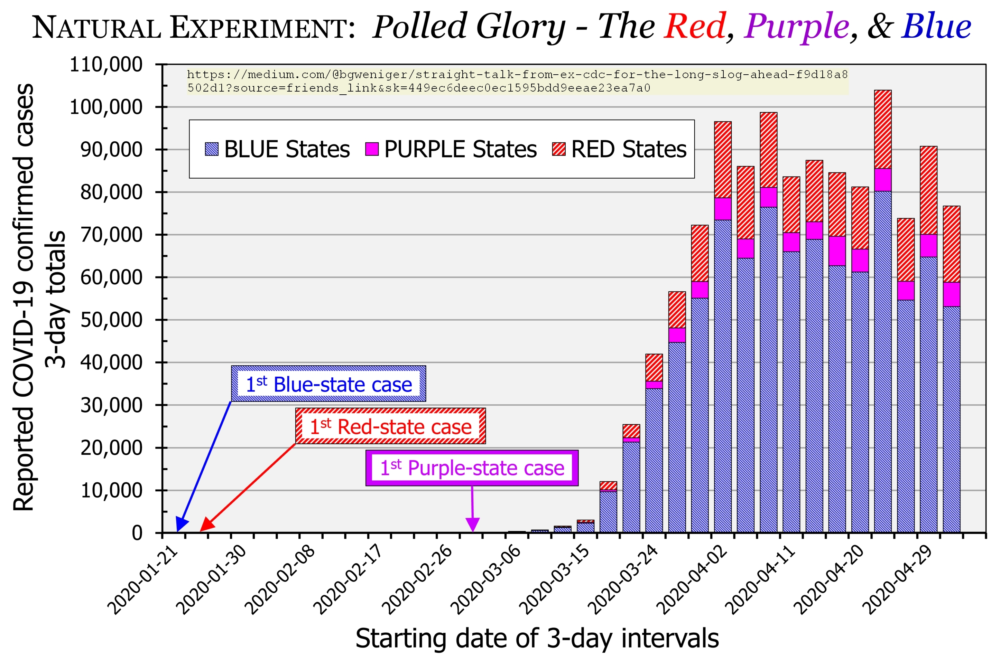

Need .CSV or .XLSX file for new or cumulative cases & deaths by date and by state
Issue number 405
Bruce404 opened this issue on May 8, 2020 at 3:42 pm
As CDC retirees continuing to update a chart for a public Medium.com essay:
"Straight Talk by ex-CDC for the Long Slog Ahead"
… We need a downloadable .CSV, .XLSX, or equivalent dataset to continue updating stratification of the national epidemic curves (“Polled Glory”) by political preferences of Red States, Purple States, and Blue States. If one exists at this Github site, please provide its direct URL. We currently use one by the NY Times (https://github.com/nytimes/covid-19-data/blob/master/us-states.csv), but it requires tedious copying and pasting of nearly 4,000 rows.
Thank you, 
qpmnguyen closed the issue on May 11, 2020 at 8:07 am
Thank you very much for your input @Bruce404! You can find a link to download our csv file here https://covidtracking.com/api/v1/states/daily.csv You can use the same link above to download data daily as the URL won’t be changing. You can find links to other csv files we have on hand at https://covidtracking.com/api Feel free to let us know if you have any additional questions.